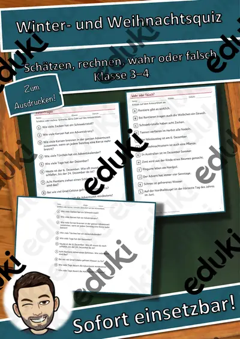

Teströhrchenhalter - Coronatest
KostenlosMaterial auf eduki ansehen
Mit dieser Teströhrchenhalter-Material zum Falten von Teströhrchenhalter für eure Schüler erhalten Sie einen Bogen mit jeweils 4 Teströhrchenhalter-Vorlagen. Die Vorlage muss ausgeschnitten, an den gestrichelten Linien gefaltet und an den grauen Stellen geklebt werden. Auch auf Standardpapier kopiert und gebastelt, ist sie sehr stabil und kann viele Male genutzt werden. Die Ausschnitte für die Teströhrchen sind in der Größe - je nach Test- variabel. 😊Liebe Grüße.
FachFachübergreifendes
KlasseKl. 4–9
SchulformFörderunterricht
MaterialartMal- und Bastelvorlagen
Ähnliche Materialien

Advents-Ideen Gesamtpaket: 11 Materialien für die Adventszeit, Klasse 1–4

Male weiter!: 5 Bildanfänge für Fantasie-Bilder, Klasse 1–4

Zeichen-Duell im Advent: Genau beschreiben, genau zuhören, Klasse 2–4

Winter-Fragekarten: 32 Fragen für Kugellager und Sitzkreis, Klasse 2–4

Stadt, Land, Winter: Das Wörterspiel für die Adventszeit, Klasse 2–4

Wichteln in der Klasse: Lesetext, Regeln, Lose und Steckbrief, Klasse 2–4

Lolli-Karten: Süße Grüße zum Nikolaus und zu den Ferien, Klasse 1–4
